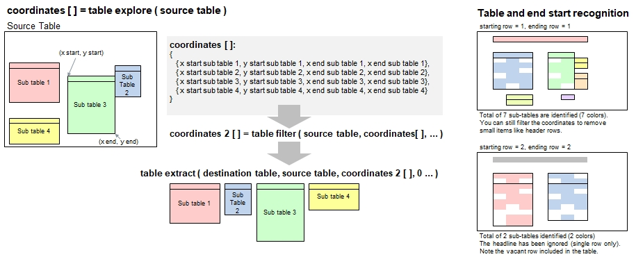

Introduction
A new powerful B4P feature, consisting of three functions, is to identify, select and extract one or more sub-tables located inside a table.
This becomes very useful when dealing with sophisticated tables created by external sources where you cannot advise them how to
structure the data so you can use them easily. Following three functions need to be called in sequence:
table explore(): This function identifies all sub-tables inside a table where a few criteria settings are available to identify tables and keep them
separate from other contents, e.g. title texts.
This function returns a parameter set containing 0, 1 or more coordinates for every sub-table found.
The sub-tables beginning on the same row must contain a spacing of 1 column. Direct neighboring is possible if the next table begins at a different tow (Illustration: See sub-table 2 and 3).
table filter(): The collection of coordinates can be narrowed down by matching header contents with given patterns and specifying minimum
table widths and heights. This function also returns the same kind of parameter set, but probably with fewer coordinates.
table extract(): This final function will extract a selected sub-table based on the coordinates and sub-table chosen.
Tables can be extracted either into new blank tables or added to existing tables, allowing to arrange them horizontally and/or vertically.
